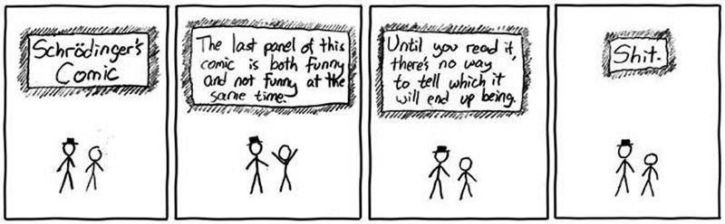
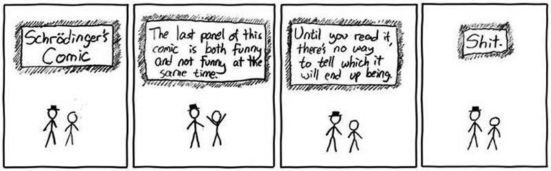
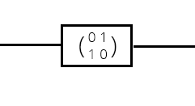

On Quantum Computing and
Entangled SCHRÖDINGER'S
CATS

by Archy Wilhes | on github as 0a- | tweets @archywilhes
One of my hobbies is writing explanatory articles.
If one googles "calculus explained", "javascript closure", "axiomatic systems", "set theory explained", "axiomatic set theory", she or he would expect to see my articles in 1st or 2nd page of search results :)
Quantum computer does not "run faster"
than a classical computer.
It just works differently.
And this difference enables it to solve certain problemsa lot more efficiently than classical computers.

"I think I can safely say that nobody understands quantum mechanics." - Richard Feynman
1. The quantum nature of an electron.
Sometimes behave like wave, sometimes behave like particle.
destructive interference of wave propagations
The set-up for the double-slit experiment.

Single electron events build up to from an interference pattern in the double-slit experiment.
2. The idea of Schrödinger's cat, and quantum state.
Being in all possible states at once.
 

3. Quantum entanglement.
"spooky action at a distance"
measurement on entangled particles are somehow correlated.
The spins of entangled photons (after polarization) are measured & compared in
the Bell's inequality experiments (CHSH) to disprove local hidden variable theory.
Quantum Turing Machine
vs
Classical Turing Machine
A qubit is a schrödinger's cat.
Can be both 1 and 0 at the same time
A classical bit is classical.
Is either 1 or 0.
Qubits are entangled.
A $n$ qubits system can be expressed as
a sum of all possible states,
each multiplying a probability amplitude
Classical bits are classical.
here is a system with one bit: 1
here is a system with 3 bits: 110
a system with 1 qubit
$$a \left | 0 \right\rangle + b \left | 1 \right\rangle $$$$\text{where } a^2+b^2=1$$
a system with 3 qubits
$$\begin{align} &a \left | 000 \right\rangle + b \left | 001 \right\rangle + c \left | 010 \right\rangle + d \left | 011 \right\rangle + \\ &e \left | 100 \right\rangle + f \left | 101 \right\rangle + g \left | 110 \right\rangle + h \left | 111 \right\rangle \end{align}$$$$\text{where } a^2+b^2+c^2+d^2+e^2+f^2+g^2+h^2 = 1$$
A 4 qubits system.
Each bit can thus be expressed
as a $n^2$-dimensional vector
$$\text{one qubit, }a \left | 0 \right\rangle + b \left | 1 \right\rangle \text{ , can be expressed as } \begin{pmatrix} a\\ b \end{pmatrix}$$
Each quantum gate can thus be seen as a matrix.
$$\begin{pmatrix} 0 & 1\\ 1 & 0 \end{pmatrix} \begin{pmatrix} a\\ b \end{pmatrix} = \begin{pmatrix} b\\ a \end{pmatrix}$$
Since the probability amplitude may take in complex number. A qubit can also be represented geometrically:
manipulating qubits == doing linear algebra with complex number
vs
manipulating classical bits == doing boolean algebra
Some famous quantum algorithms
Prime factorization algorithm (Shor's algorithm )
Discrete Logarithm algorithm
Quantum Fourier transform
Search algorithm (Grover's algorithm)
Quantum Walks
Simon's Algorithm (not really pratical though)
Some quantum computing simulators:
Quantum playground: http://www.quantumplayground.net/ (also on Github)
Q++: http://qplusplus.sourceforge.net/
PyQu: https://code.google.com/p/pyqu/

NSA runs $79.7 million research, "Pentrating Hard Targets",
to develop quantum computer

This is the End. Thank you.
You follow me on twitter @archywilhes and/or github 0a-
The slide can be found on http://talks.0ar.ch